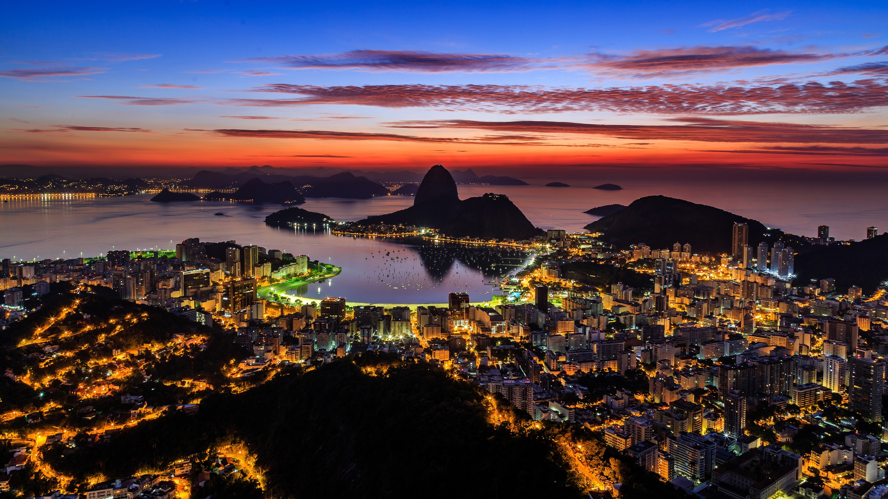
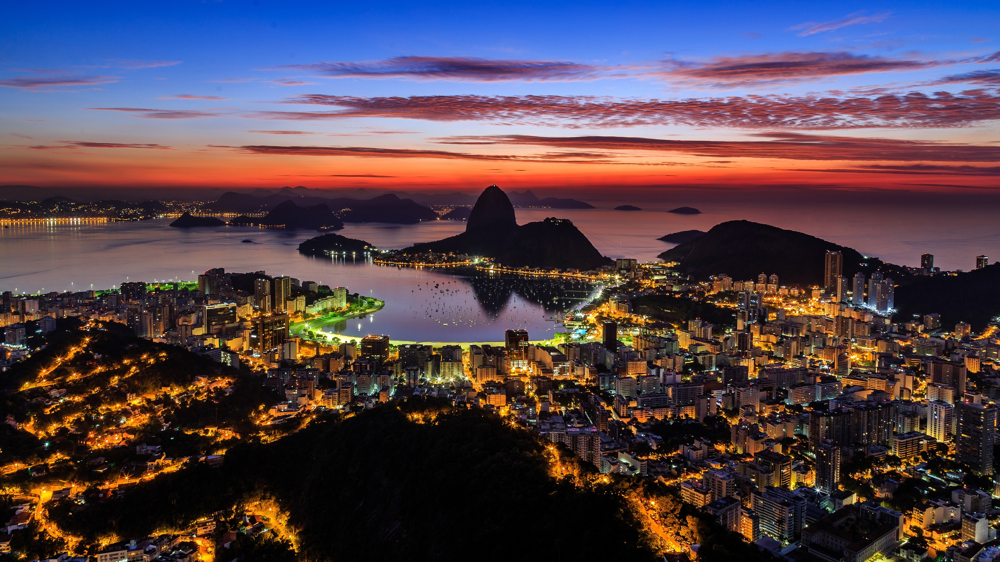

Turismo Independiente
TURISMO INDEPENDIENTE
Avenida Tenor Fleta 74, Local 2
50007 Zaragoza
Teléfono: 976-653-321
info@turismoindependiente.com
Destinos
Rio de Janeiro

La ciudad de Río, además de poseer un clima privilegiado y una geografía única, ofrece un sinfín de opciones de deporte, ocio y turismo. Además, es un paraíso para quien le gusta comer bien. Desde los sabrosos y exóticos platos de la cocina típica brasileña hasta platos más sofisticados de la cocina internacional.

La ciudad de Río, además de poseer un clima privilegiado y una geografía única, ofrece un sinfín de opciones de deporte, ocio y turismo. Además, es un paraíso para quien le gusta comer bien. Desde los sabrosos y exóticos platos de la cocina típica brasileña hasta platos más sofisticados de la cocina internacional.
Destinos Frecuentes
Bali
Conocida como la Isla de los Dioses, Bali es una isla paradisíaca...
Río de Janeiro
La ciudad carioca ofrece un sinfín de posibilidades...
Nueva York
La Gran Manzana es una ciudad sorprendente, con mucho para ver y hacer...
Bali
Conocida como la Isla de los Dioses, Bali es una isla paradisíaca...
Río de Janeiro
La ciudad carioca ofrece un sinfín de posibilidades...
Nueva York
La Gran Manzana es una ciudad sorprendente, con mucho para ver y hacer...